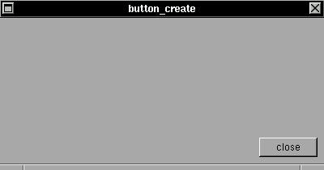

The XSTEP button enable you to link any C function to a X widget. If the user press and release the button of mouse over this widget, the a C function will be called.SYNTAX
struct xtree *button_create(x,y,w,h,text,f);int x,y,w,h;
char *text;
void (*f)(struct xtree *);
Create a button with label 'text' in position (x,y) and size (w,h). If you press and release the mouse button over this button, the function 'f()' will be called by XSTEP (if you press the mouse button over the widget, but release out, the operation is ignored).EXAMPLE
In this small example, a window will be created with a button inside. If you close the window or click in the button, the application will be finalized (in fact the window will be closed, but without any open window, the application is automatically finalized).#include <xstep.h> void xmain(int n,char *p[]) { window_create(0,0,400,180,"button_create"); button_create( -8,-8,72,24,"close",window_close); }The button in this example have a position relative to right down corner of window. If you resize the window, the button will be moved to maintain the relative position.